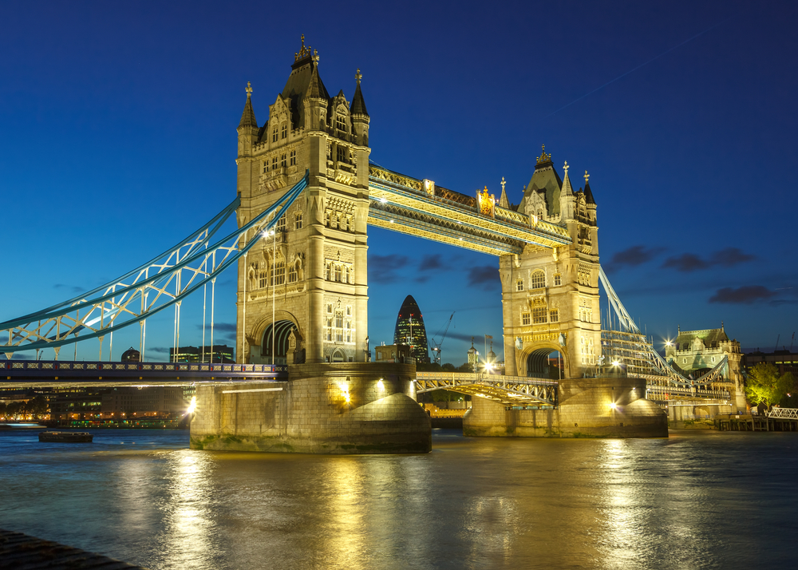
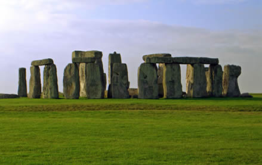
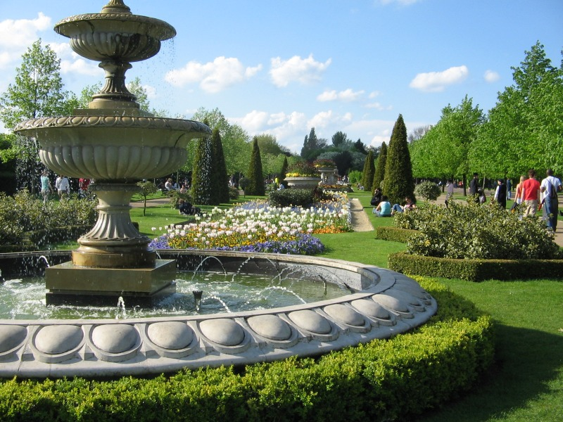

England
London Bridge
|
London Bridge have spans the River Thames between the City of London and Southwark, incentral London.
The current crossing, which opened to traffic in 1974, is a box girder bridge built from concrete and steel.
This replaced a 19th-century stone-arched bridge, which in turn superseded a 600-year-old medieval structure. |
 |
Stonehenge
|
Stonehenge is a prehistoric monument in Wiltshire, England.
Stonehenge's ring of standing stones are set within earthworks in the middle of the most dense complex of Neolithicand Bronze Age monuments in England,
including several hundred burial mounds.Archaeologists believe it was constructed from 3000 BC to 2000 BC. |
 |
London Eye
|
The London Eye is a giant Ferris wheel on the South Bank of the River Thames in London.
It is also known as the Millennium Wheel.
It is Europe's tallest Ferris wheel,and offered the highest public viewing point in London |

|
Regents Park
|
Regent's Park is one of the Royal Parks of London.
It lies within north-west London, partly in the City of Westminster and partly in the London Borough of Camden.
It contains Regent's University London and the London Zoo. |
 |